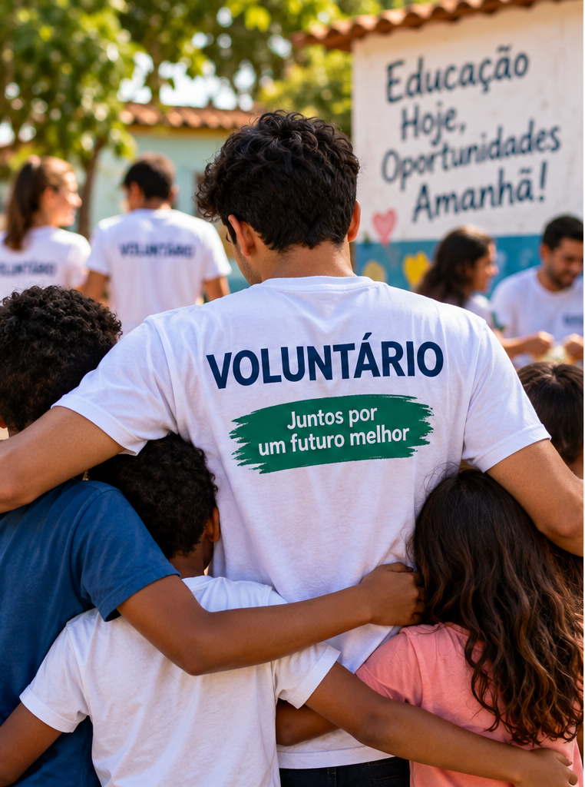
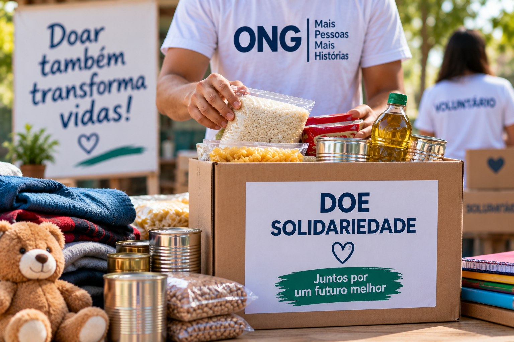

Educação e Inclusão
Realizamos atividades educativas e comunitárias que incentivam a aprendizagem, a inclusão e a participação social.
Nossos projetos promovem inclusão, educação, solidariedade e oportunidades para pessoas em situação de vulnerabilidade.
Realizamos atividades educativas e comunitárias que incentivam a aprendizagem, a inclusão e a participação social.

O programa de voluntariado conecta pessoas interessadas em contribuir com ações educativas, sociais e comunitárias.
Os voluntários podem participar de campanhas, oficinas, eventos e outras atividades promovidas pela organização.
Quero ser voluntário
As campanhas de doação arrecadam alimentos, roupas, materiais escolares e outros recursos destinados às comunidades atendidas pela ONG.
As contribuições são organizadas e direcionadas conforme as necessidades identificadas em cada ação social.
Quero fazer uma doação